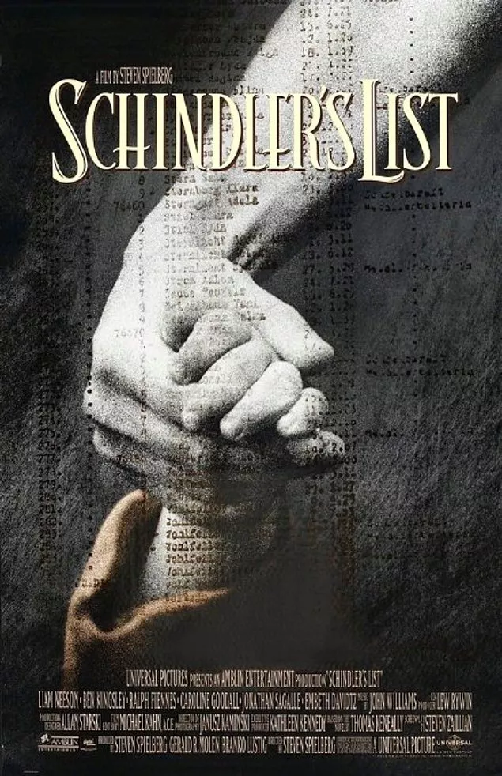

Thomas Keneally’in kitabından sinemaya uyarlanan film, Oskar Schindler adlı bir Almanişadamının II. Dünya Savaşı zamanında Polonya’da kurduğu fabrikada Yahudi işçileri çalıştırması ve bu sayede 1100 Yahudi’nin hayatını kurtarmasını konu alıyor. Gerçek bir hayat hikayesinden uyarlanan film, ünlü yönetmen Steven Spielberg’in en önemli yapıtları arasında sayılan ve ona Oscar kazandıran bir yapımdır. Film, 1994 yılında 12 dalda Oscar’a aday olmuş ve 7 dalda ödül kazanmıştı. Filmin kazandığı Oscar’lar şöyle : En İyi Film, Yönetim, Kurgu, Sanat Yönetimi, Görüntü, Özgün Müzik ve Senaryo Uyarlaması. 3 saat 15 dakikakalık süresiyle biraz göz korkutsa da mutlaka izlemeniz gereken bir film.
